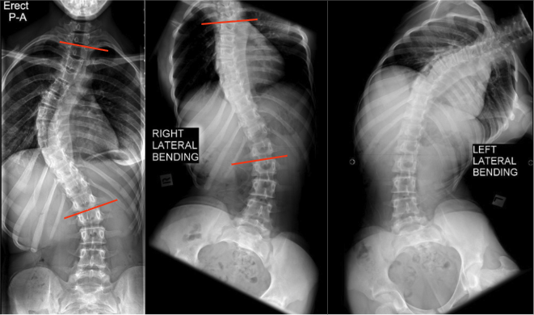

Adapted from: Gaillard F, Scoliosis. Case study, Radiopaedia.org (Accessed on 28 Dec 2025) https://doi.org/10.53347/rID-49513
1) Description of Measurement
Side-bending films quantify coronal plane flexibility of scoliotic curves by measuring the residual Cobb angle during maximal right and left lateral bending. This measurement is used to determine whether a curve is structural or compensatory, to assess curve stiffness, and to guide operative planning, including the selection of fusion levels.
Coronal flexibility reflects the ability of a spinal curve to correct with active bending and correlates with disc, facet, and ligamentous elasticity.
2) Instructions to Measure
3) Normal vs. Pathologic Ranges
Key points:
4) Important References
Ohrt-Nissen S, Shigematsu H, Cheung JPY, et al. Predictability of Coronal Curve Flexibility in Postoperative Curve Correction in Adolescent Idiopathic Scoliosis: The Effect of the Sagittal Profile. Global Spine J. 2020 May;10(3):303-311. doi: 10.1177/2192568219877862.
Lenke LG, Edwards CC 2nd, Bridwell KH. The Lenke classification of adolescent idiopathic scoliosis: how it organizes curve patterns as a template to perform selective fusions of the spine. Spine (Phila Pa 1976). 2003 Oct 15;28(20):S199-207. doi: 10.1097/01.BRS.0000092216.16155.33.
King HA, Moe JH, Bradford DS, Winter RB. The selection of fusion levels in thoracic idiopathic scoliosis. J Bone Joint Surg Am. 1983 Dec;65(9):1302-13.
Luk KD, Cheung KM, Lu DS, Leong JC. Assessment of scoliosis correction in relation to flexibility using the fulcrum bending correction index. Spine (Phila Pa 1976). 1998 Nov 1;23(21):2303-7. doi: 10.1097/00007632-199811010-00011.
5) Other info....
Side-bending films are critical for:
Should be interpreted in conjunction with:
In patients unable to actively bend, supine traction or push-prone films may be used as alternatives
Residual Cobb angle on bending is often more predictive of surgical correction potential than the baseline erect Cobb angle alone